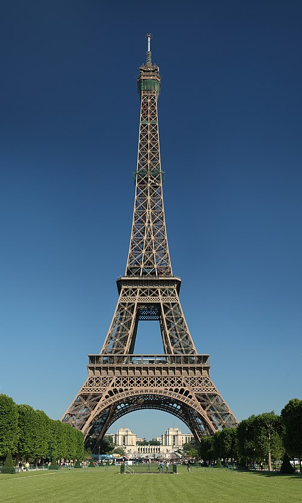
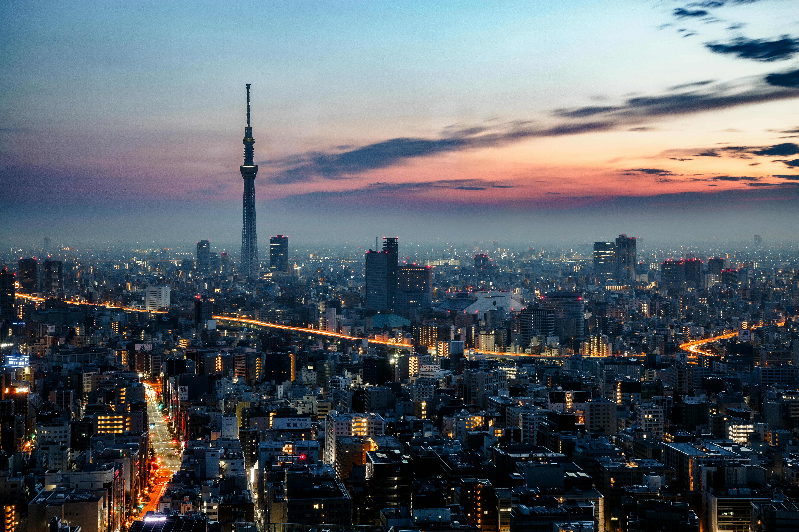

Paris

Paris, the city of lights, is known for its art, fashion, and culture. It is home to iconic landmarks such as the Eiffel Tower and the Louvre Museum.
- Visit the Eiffel Tower
- Explore the Louvre Museum
- Stroll along the Seine River
Tokyo

Tokyo, Japan's bustling capital, blends the ultramodern with traditional culture. From neon-lit skyscrapers to historic temples, Tokyo offers a unique experience.
- Visit the Tokyo Tower
- Explore Asakusa and Senso-ji Temple
- Shop in Shibuya and Harajuku
Budapest

Budapest, Hungary's capital, is known for its stunning architecture and thermal baths. The city is divided by the Danube River into Buda and Pest.
- Relax in the Széchenyi Thermal Bath
- Visit Buda Castle
- Walk across the Chain Bridge
For more travel inspiration, visit TripAdvisor.